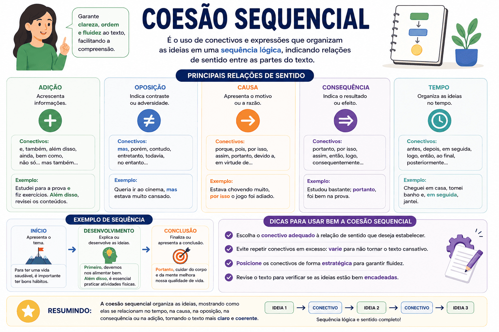

Coesão Sequencial: o que é, principais conectivos e exemplos práticos
A coesão sequencial é o verdadeiro "motor" do texto. Enquanto a coesão referencial amarra as palavras para evitar repetições, a coesão sequencial é responsável por fazer as ideias avançarem, criando relações lógicas (como causa, oposição, tempo e conclusão) entre orações, períodos e parágrafos.
Dominar esse mecanismo é indispensável para construir uma argumentação sólida. Um texto sem coesão sequencial adequada parece uma lista de frases soltas; já um texto bem articulado guia o leitor de forma clara e fluida da introdução até a conclusão.

A regra de ouro: A coesão sequencial garante a progressão lógica. Ela responde à pergunta: "Como a frase que estou escrevendo agora se relaciona com a frase anterior?".
O que é Coesão Sequencial?
Na linguística textual, a coesão sequencial designa os procedimentos que fazem o texto progredir de maneira articulada. Esse tipo de coesão é construído, na grande maioria das vezes, por meio de conectivos (ou operadores argumentativos), que incluem conjunções, locuções conjuntivas, preposições e alguns advérbios.
Principais Relações Lógicas e seus Conectivos
Para cada intenção argumentativa, existe um grupo de conectivos adequado. Usar a palavra certa no lugar certo é o que garante a coerência da sua redação. Veja as relações mais cobradas em provas:
| Relação Lógica | Principais Conectivos (Operadores) | Exemplo de Uso |
|---|---|---|
| Adição (soma de ideias) | e, nem, não só... mas também, além disso, ademais, outrossim. | O candidato estudou muito; além disso, fez revisões diárias. |
| Oposição / Contraste | mas, porém, contudo, todavia, entretanto, no entanto. | O projeto era inovador, porém não recebeu financiamento. |
| Concessão (ressalva) | embora, conquanto, ainda que, mesmo que, apesar de. | Embora estivesse cansado, finalizou a redação. |
| Causa | porque, pois, visto que, já que, dado que, uma vez que. | O rio transbordou visto que choveu intensamente. |
| Conclusão | portanto, logo, então, por conseguinte, assim, desse modo. | Faltam investimentos na área; portanto, a crise tende a piorar. |
A Coesão Sequencial entre Parágrafos (Interparágrafos)
Muitos estudantes focam apenas em ligar as frases dentro de um mesmo parágrafo (coesão intraparágrafo) e esquecem de ligar os parágrafos entre si. Isso é um erro fatal em dissertações.
Como iniciar seus parágrafos de desenvolvimento:
- Para somar argumentos: "Nesse sentido", "Sob esse viés", "Além disso", "Ademais".
- Para contrapor o parágrafo anterior: "Por outro lado", "Em contrapartida", "No entanto".
- Para iniciar a conclusão: "Portanto", "Infere-se, logo, que", "Desse modo".
Foco no ENEM e PAES UEMA:
Para atingir a nota máxima (200 pontos) na Competência IV do ENEM, você é obrigado a usar operadores argumentativos interparágrafos em, pelo menos, dois momentos do texto (ex: iniciar o D2 com "Ademais" e a Conclusão com "Portanto").
Nas provas do PAES UEMA, a banca valoriza a articulação clássica e formal. Evite repetir o mesmo conectivo ("mas", "porque") e mostre domínio vocabular utilizando sinônimos como "contudo", "entretanto", "haja vista" ou "por conseguinte".
Cuidado com o conectivo "onde"!
Um erro comum de coesão é usar "onde" como um conectivo coringa para qualquer situação (Ex: "A sociedade atual, onde a tecnologia predomina..."). O pronome "onde" só pode ser usado para indicar lugar físico. No exemplo citado, o correto seria "na qual" ou "em que".
Quiz — Coesão Sequencial
Resumo sobre Coesão Sequencial
- Conceito: Mecanismo que faz o texto progredir, garantindo a ligação lógica entre orações e parágrafos.
- Ferramentas principais: Conectivos e operadores argumentativos (conjunções, locuções, advérbios).
- Relações mais cobradas: Adição (ademais), Oposição (porém), Causa (visto que), Concessão (embora) e Conclusão (portanto).
- Diferencial na Redação: É obrigatório usar conectivos ligando os parágrafos (coesão interparágrafos) para obter notas altas na Competência IV do ENEM.
- Atenção ao sentido: Usar o conectivo errado (ex: usar "contudo" querendo concluir uma ideia) compromete a coerência inteira do texto.
Perguntas frequentes (FAQ)
Posso começar um parágrafo de desenvolvimento com "Mas"?
Na redação dissertativo-argumentativa formal, não é recomendado iniciar parágrafos com conjunções coordenativas curtas como "Mas" ou "E". Prefira locuções mais robustas, como "Por outro lado", "Entretanto" ou "Em contrapartida".
Qual a diferença entre coesão sequencial e coesão referencial?
A referencial "olha para trás ou para frente" retomando ou antecipando substantivos (usando pronomes e sinônimos). A sequencial "empurra o texto para frente", estabelecendo relações lógicas de causa, oposição e conclusão (usando conjunções).
O que são operadores argumentativos?
São palavras ou expressões (geralmente conectivos) que têm a função específica de guiar a direção argumentativa do texto. Eles mostram ao leitor qual é a sua intenção: somar argumentos, apresentar uma ressalva ou finalizar um raciocínio.
Conteúdos relacionados e de aprofundamento
Referências bibliográficas
- KOCH, Ingedore Villaça. A Coesão Textual. 22. ed. São Paulo: Contexto, 2018.
- KOCH, Ingedore V.; ELIAS, Vanda Maria. Ler e Escrever: Estratégias de Produção Textual. São Paulo: Contexto, 2009.
- CUNHA, Celso; CINTRA, Lindley. Nova Gramática do Português Contemporâneo. 7. ed. Rio de Janeiro: Lexikon, 2017.
Explore Outros Conteúdos
Continue seus estudos acessando outras seções do site Mestre Kira: